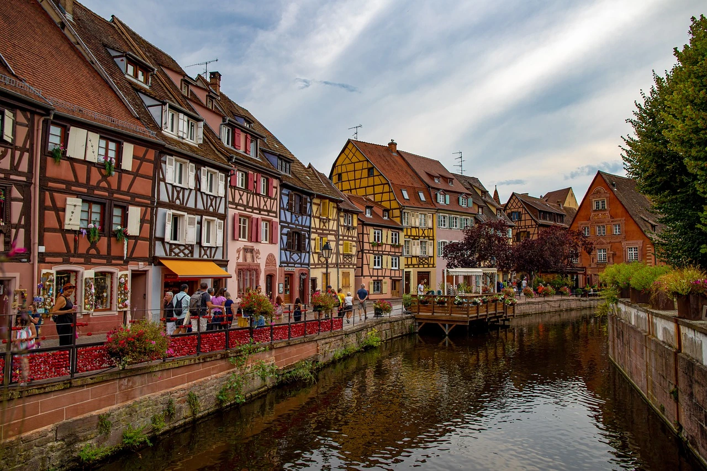

Colmar
Colmar puts you right in the center of the story, Beauty and the Beast. This cute and charming town is located right near the borders of Germany and Switzerland. It is known for it's medieval architecture, colorful houses, and beautiful cobblestone streets. Colmar is rich with history, having changed between France and Germany multiple times.

Colmar Hotels
- Hotel Primo: Starting prices around $65 depending on size of room, about 5 minute walk to Unterlinden museum.
- James Boutique Hotel: Starting prices around $124 depending on size of room, about a 2 minute walk to the city center and easy access to parking.
- L'Esquisse: More expensive hotels, starting prices around $311. Only slightly out of the historical center but only a few minutes walk.
Colmar Restaurants
- Wistub Brenner: Serves delicious traditional Alsatian cuisine in the heart of Little Venice. Famous for their sauerkraut, bibalaskas, and a pie of the valley
- Schwendi Bier und Wistub: Serves fantastic French cuisine in the old town of Colmar. If you are looking to try snail for the first time, they serve delicious snails.
- La Cour des Anges: Serves wonderful French cuisine with vegan options and tarts in the center of Colmar. Their pastries are home-made with tasty fillings.
Colmar Activities
- Unterlinden Museum: Linked to the former municipal baths building inaugurated in 1906, displays architecture and an underground gallery consisting of three exhibition rooms.
- La Petite Venise: Do not hesitate to walk through La Petite Venise (Little Venice). This area has beautiful canals, cute houses, and the beauty of France
- Bartholdi Museum: Located in the house of the famous sculptor Auguste Bartholdi. It is dedicated entirely to presenting Auguste's famous work: models, drawings, paintings, and engravings.